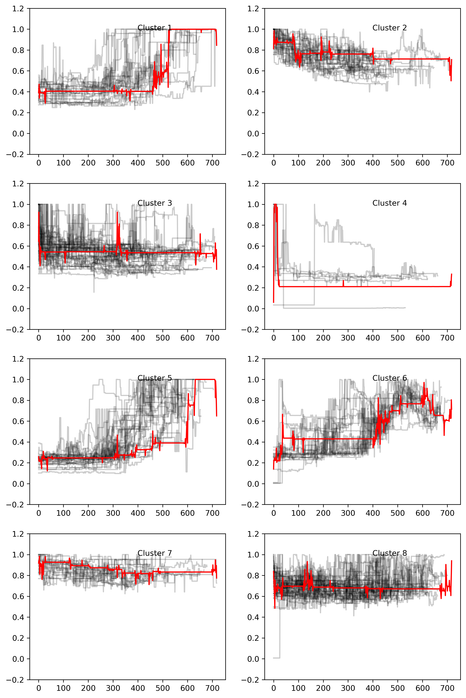

Clustering
1. PC Component Price Time Series (Python Record Data)
1.1 Pre-classification of PC components
The python script for this part is data_clean/amazon/timeseries_converter.ipynb. All the preprocessed time series can be found at data/amazon folder on GitHub (see below for the definition of each file).
Data in amazon database is recorded in unequal-interval time series, since Keepa API write a new value to their database only when the price changes.
So, the first step of preprocessing is to rebuild a equal-interval time series from the database. Pandas is a useful tool to do this. Since it not only provides an SQL interface but also provides a powerful function called resample. With Pandas, historical price data in SQLite database can be easily converted into equal-interval time series. After several attempts, the time interval for resampling is assigned to 1 day.
| File Prefix | Meaning |
|---|---|
| NEWS | price history of the New in marketplace |
| USED | price history of the Used in marketplace |
| BUY_BOX | price history of the New buy box |
| EBAY_NEW | price history of the lowest new price on the respective eBay locale |
| EBAY_USED | price history of the lowest used price on the respective eBay locale |
Another thing needs to be considered is that Keepa API uses -1 as out-of-stock, but these negative values will disturb the following clustering. Therefore, all -1s in the time series are filled with a previous non-negative value to create a normal price time series.
But the out-of-stock data does contain some useful information, so a new time series called out-of-stock indicator that records the out-of-stock status is created, which all normal prices are converted into 0 and out-of-stock values are converted into 1.
Since the products are released in varied date, some products have data more than 4 years, but some products only have data less than 6 months. A pre-classification is performed on the products, all data are separated into different files based on their time span. The files are labeled by some suffixes.
| File Suffix | Meaning |
|---|---|
| s | time span less than 6 months |
| 6m | time span between 6 months to 1 year |
| 1y | time span between 1 year to 2 years |
| 2y | time span between 2 years to 4 years |
| 4y | time span more than 4 years |
| ts | time series, each row contains a time series of normal price separate by space. |
| osts | time series, each row contains a time series of out-of-stock indicators separate by space. |
| eqts | time series of normal prices but are truncated to same length. |
| eqosts | time series of out-of-stock indicators but are truncated to same length. |
| label | label, each row contains product type + product name as label |
Because some distance metrics in the following clustering require an equal-length time series, so time series all have a truncated version. For example, BUY_BOX_eqts_1y.txt contains the same products as BUY_BOX_ts_1y.txt, but the time spans of the data are truncated to exactly 1 year.
1.2 Clustering on unequal-length Time Series (KMeans, metric: DTW, Soft-DTW)
The pre-classified datasets are not unequal-length time series. For example, the length of time series in BUY_BOX_ts_1y.txt can vary from 360(1 year) to 719(2 year).
DTW(Dynamic Time Warping) is a better metric to measure the similarity between time series compare to euclidean metric, especially for unequal-length time series(which euclidean metric is no longer available). The tslearn package provides this metric in Python and a time series version of KMeans clustering algorithm. A TimeSeriesKMeans model using DTW metric with n_clusters=8 is trained by the time series in NEW_ts_1y.txt. The table of clustering results shows below.
| CPU | GPU | Drive | |
|---|---|---|---|
| Cluster 1 | 2 | 16 | 1 |
| Cluster 2 | 5 | 20 | |
| Cluster 3 | 10 | 1 | 28 |
| Cluster 4 | 1 | 6 | |
| Cluster 5 | 27 | ||
| Cluster 6 | 4 | 14 | |
| Cluster 7 | 3 | 2 | 12 |
| Cluster 8 | 6 | 4 | 28 |
The visualization of clusters shows below.
Some patterns can be found in the clustering table and visualization:
(1) Cluster 1,5,6 are both GPU-dominated clusters, they all show increasing trends in price which indicates an abnormal impact on their prices.
(2) Cluster 2,3,7,8 are both drive-dominated clusters, they all follow a normal decreasing trend in price which occurs in most goods.
(3) There's no CPU-dominated cluster, but most CPUs(25) follow the normal decreasing trend and only 6 CPUs follow the abnormal increasing trend.
The cluster centers of DTW metric are kind of sharp that have many sudden jumps. A variant of DTW names soft-DTW gives much smoother cluster centers. A TimeSeriesKMeans model using soft-DTW metric with n_clusters=6 is trained by the same time series. The table of cluster result shows below.
| CPU | GPU | Drive | |
|---|---|---|---|
| Cluster 1 | 1 | 26 | |
| Cluster 2 | 15 | 3 | 40 |
| Cluster 3 | 8 | 4 | 38 |
| Cluster 4 | 1 | 17 | |
| Cluster 5 | 5 | 16 | |
| Cluster 6 | 1 | 14 |
The visualization of clusters shows below.

Similar patterns can be found in this model:
(1) Cluster 1,4,6 are both GPU-dominated clusters, they all show increasing trends in price which indicates an abnormal impact on their prices.
(2) Cluster 2,3,5 are both drive-dominated clusters, they all follow a normal decreasing trend in price which occurs in most goods.
(3) There's no CPU-dominated cluster, but most CPUs(28) follow the normal decreasing trend and only 3 CPUs follow the abnormal increasing trend.
(4) The cluster centers are much smoother that the trends are clearly shown from them.
1.3 Clustering on equal-length Time Series (KMeans, metric: Euclidean, Cross-correlation)
Some metrics like euclidean and cross correlation in tslearn need equal-length time series as input. First, a TimeSeriesKMeans model using euclidean metric with n_clusters=6 is trained by the time series in NEW_eqts_1y.txt. The table of cluster result shows below.
| CPU | GPU | Drive | |
|---|---|---|---|
| Cluster 1 | 1 | 14 | 1 |
| Cluster 2 | 14 | 2 | 44 |
| Cluster 3 | 8 | 4 | 38 |
| Cluster 4 | 1 | 26 | 2 |
| Cluster 5 | 1 | 1 | 19 |
| Cluster 6 | 1 | 18 |
The visualization of clusters shows below.

This model gives a very similar clustering result with the DTW model and soft-DTW model. But the smoothness of cluster centers are between two DTW models.
Then, a KShape model using cross-correlation metric with n_clusters=4 is trained by the same time series. The table of cluster result shows below.
| CPU | GPU | Drive | |
|---|---|---|---|
| Cluster 1 | 17 | 16 | |
| Cluster 2 | 17 | 1 | |
| Cluster 3 | 14 | 12 | 76 |
| Cluster 4 | 35 | 1 |
The visualization of clusters shows below.
The number of clusters of this model is only 4, 2 GPU-dominated clusters and 2 CPU-drive-mixed clusters.